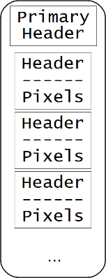
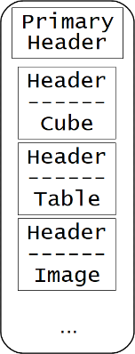
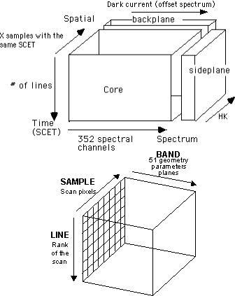

GeoFITS
Interoperability from acquisition to visualization in Planetary Science.
Chiara Marmo et al.
(in the VESPA EUROPLANET 2020 collaboration)
What does FITS mean?
- Stands for 'Flexible Image Transport System'
- The standard data format used in astronomy
- Endorsed by NASA, IAU and IVOA
- Header keywords provide descriptive information about the data
- Band SeQuential (BSQ) storage format
Does FITS fit Planetary Science?
- Compatible with PDS (version 3 and 4) archiving constraints
- Efficient projection (World Coordinate System) description (but for 3D systems)
- Ready for multi-digital objects
- Community driven processing libraries (e.g. astropy)
GeoFITS
FITS extension convention for planetary surfaces
| Keyword | Value | PDS4 |
|---|---|---|
| WGCCRECS | string | spheroid_name |
| A_RADIUS | real | semi_major_radius |
| B_RADIUS | real | semi_major_radius |
| C_RADIUS | real | polar_radius |
GeoFITS
FITS developments for planetary surfaces
(see
Marmo et al., 2016, 47th LPSC, #1870):
- FITS translation in GDAL Virtual header (GEOPS)
- GDAL FITS driver enhancement (USGS)
- SIAP protocol in QGIS (Jacobs University)
Multi Extension FITS
An easy way to store inhomogeneous digital information with relative metadata in the same file
- multi-detector imagery (e.g. HiRISE)
- multiple digital objects (e.g. OMEGA and CRISM)
HiRISE

HiRISE
>> hdulist.info()
Filename: ESP_011265_1560_RED.fits
No. Name Type Cards Dimensions Format
0 PRIMARY PrimaryHDU 4 ()
1 ImageHDU 17 (2048, 100000) uint8
2 ImageHDU 17 (2048, 100000) uint8
3 ImageHDU 17 (2048, 100000) uint8
4 ImageHDU 17 (2048, 100000) uint8
5 ImageHDU 17 (2048, 100000) uint8
6 ImageHDU 17 (2048, 100000) uint8
7 ImageHDU 17 (2048, 100000) uint8
8 ImageHDU 17 (2048, 100000) uint8
9 ImageHDU 17 (2048, 100000) uint8
10 ImageHDU 17 (2048, 100000) uint8
OMEGA
 from OMEGA Experiment Archive Interface
Control Document (IAS)
OMEGA
>> hdulist.info()
Filename: orb0413_1.IR1.fits
No. Name Type Cards Dimensions Format
0 PRIMARY PrimaryHDU 23 (128, 1784, 128) int16
1 WCS-TAB BinTableHDU 17 1R x 2C [228352D, 228352D]
2 INCIDENCE ImageHDU 8 (128, 1784) float64
3 EMISSION ImageHDU 8 (128, 1784) float64
4 PHASE-ANGLE ImageHDU 8 (128, 1784) float64
Multi Extension FITS conversion
Some example scripts are available at
https://github.com/cmarmo/convertofits
Do you have exotic formats worth to convert in FITS?
Let me know!
Thanks for listening!